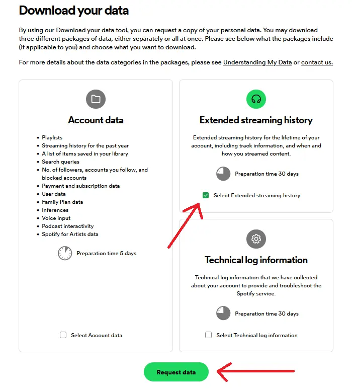
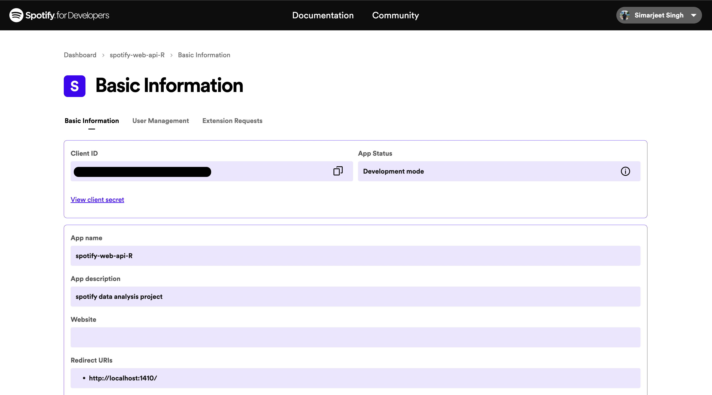
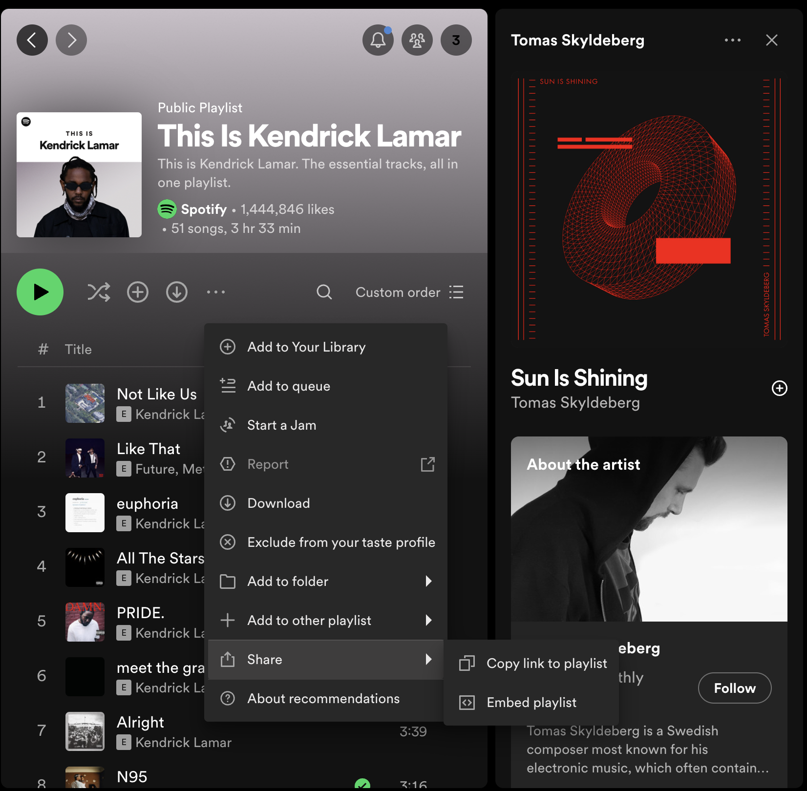
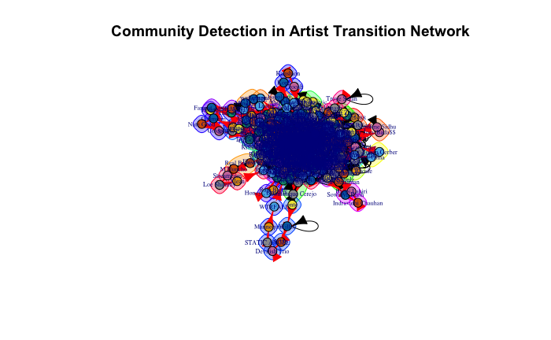
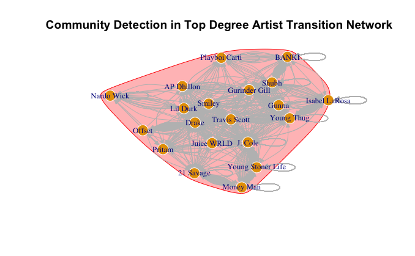
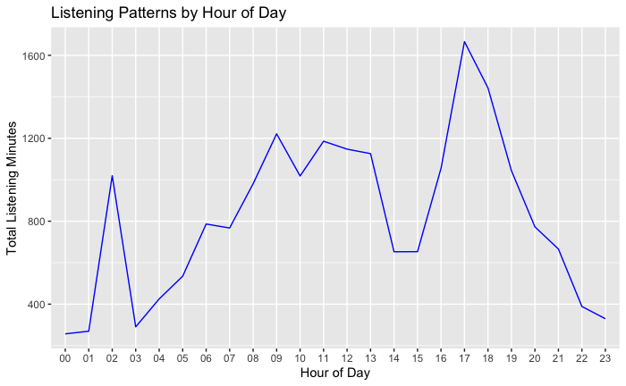
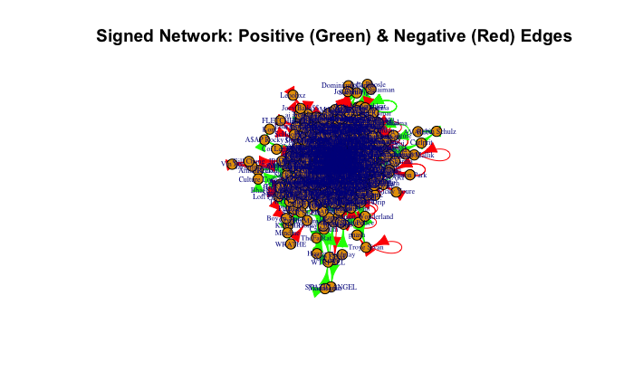

Data Retrieval Methods
Requesting Access to User Data
Spotify allows researchers to request access to specific datasets or subsets of data for research purposes. This method is beneficial when researchers require access to specialized or comprehensive datasets that may not be readily available through other means.
Process: Researchers typically need to provide detailed information about their research objectives, the specific data they require, and how they intend to use it. Spotify evaluates each request on a case-by-case basis and may grant access based on factors such as the researcher’s credentials, the relevance of the research, and data availability.
Timeframe: Once approved, Spotify typically provides access to the requested data within a specified timeframe, which can vary depending on factors such as the volume and complexity of the data.
Real-time Access Using Spotify Web API
The Spotify Web API is a powerful tool that allows developers and researchers to programmatically access a wide range of data and functionality from the Spotify platform.
Authentication: Accessing the Spotify API requires authentication to ensure secure interactions with user data. The API supports several authentication methods, including Client Credentials Flow, Authorization Code Flow, and Implicit Grant Flow.
Endpoints: The API provides various endpoints to interact with Spotify’s music catalog, user data, playlists, and other features. Some common endpoints include:
- Track Endpoints: Retrieve information about individual tracks, such as metadata, audio features, and popularity metrics.
- Artist Endpoints: Access details about artists, including their names, genres, popularity, and related artists.
- Album Endpoints: Retrieve album information, including their name, release date, artists, and track listings.
- Playlist Endpoints: Access details about playlists, including their name, description, track listings, and owner.
- User Endpoints: Retrieve information about Spotify users, including their profile details, playlists, saved tracks, and listening history.
- Search Endpoints: Perform searches across the Spotify catalog for tracks, albums, artists, playlists, and other entities.
Usage: This method allows for dynamic retrieval of up-to-date data, which can be used for real-time analysis and visualization.
Playlist URI Access
Spotify assigns a unique Uniform Resource Identifier (URI) to each playlist on its platform. This URI serves as a direct link to the playlist and can be used to programmatically access playlist data.
Process: The Playlist URI can be accessed by navigating to the desired playlist within the Spotify application or web interface. Once the playlist is open, the URI can be obtained through the options menu by selecting "Share" or "Copy link to playlist."
Usage: Once the Playlist URI is obtained, it can be used to retrieve detailed information about the tracks included in the playlist via the Spotify API by passing the URI as a parameter. This method provides a straightforward and efficient way to retrieve detailed information about the tracks in specific Spotify playlists.
Below is the code snippet:

# GET SPECIFIC PLAYLIST FEATURES
playlist_username <- 'INSERT_PLAYLIST_USERNAME'
playlist_uris <- c('INSERT_PLAYLIST_URI')
playlistFavs <- get_playlist_audio_features(playlist_username, playlist_uris)
playlistFavs %>%
mutate(track.popularity = as.numeric(track.popularity)) %>%
filter(track.popularity <= 10 & track.popularity != 0) %>%
ggplot(aes(x = track.name, y = track.popularity)) +
geom_col(aes(fill = track.album.name)) +
labs(x = "Track name", y = "Popularity") +
ggtitle("What are the least popular songs I listen to on Spotify?", "Popularity ranking < 35 in a specific playlist") +
theme(axis.text.x = element_text(angle = 90))
ggplotly()
# GET FAVORITE TRACKS
playlistFavs %>%
mutate(track.popularity = as.numeric(track.popularity)) %>%
filter(track.popularity >= 90) %>%
ggplot(aes(x = track.name, y = track.popularity)) +
geom_col(aes(fill = track.album.name)) +
labs(x = "Track name", y = "Popularity") +
ggtitle("What are the most popular songs I listen to on Spotify?", "Popularity ranking >= 65 in a specific playlist") +
theme(axis.text.x = element_text(angle = 90))
ggplotly()
Data Preprocessing
Handling Missing Values
Before conducting any analysis, it is essential to handle any missing values in the dataset. Missing values can lead to inaccuracies and biases in the analysis. We employed a simple yet effective strategy for managing null values in the dataset:
// Check for missing values in each column
missing_values <- sapply(streaming_history, function(x) sum(is.na(x)))
print(missing_values)
// Impute missing values with the median
streaming_history$msPlayed[is.na(streaming_history$msPlayed)] <- median(streaming_history$msPlayed, na.rm = TRUE)
Converting Time Data and Calculating Duration
Spotify's data includes the duration of track plays in milliseconds, which can be challenging to interpret directly. To make the data more comprehensible, we converted the play duration from milliseconds to minutes.
// Convert play duration from milliseconds to minutes
streaming_history$minutesPlayed <- streaming_history$msPlayed / 60000
Example Code
library(jsonlite)
// Load the dataset
streaming_history <- fromJSON("path_to_file.json", flatten = TRUE)
// Check for missing values
missing_values <- sapply(streaming_history, function(x) sum(is.na(x)))
print(missing_values)
// Impute missing values with median for numerical columns
streaming_history$msPlayed[is.na(streaming_history$msPlayed)] <- median(streaming_history$msPlayed, na.rm = TRUE)
// Convert play duration from milliseconds to minutes
streaming_history$minutesPlayed <- streaming_history$msPlayed / 60000
Exploratory Data Analysis
We computed three key centrality measures for the network constructed from the user’s Spotify streaming history:
Degree Centrality
The artists with the highest degree centrality can be inter- preted as the favorites or go-to selections for the user. They may also serve as gateway artists, introducing the user to new music through related recommen- dations.
Betweenness Centrality
The notable artists in this metric may be considered the eclectic connectors within the user’s music tastes. They may not be the most frequently played, but they play a critical role in diversifying the user’s listening experience.
Closeness Centrality
The overall closeness of the network suggests a cohe- sive listening pattern, where the user exhibits a propensity to keep their musical choices within a reachable scope of familiarity.
Below you can see the plots:Advanced Analytical Techniques
Community Detection
Community detection in networks is a crucial analytical approach used to identify clus- ters or groups of nodes that are more densely connected amongst themselves than with the rest of the network. A directed graph is constructed where each node represents an artist from your listening history, and the transitions based on the listening sequence are the directed edges. This means if you listen to one artist and then another, a directed edge connects the first artist to the second. This graph captures the transition of listening sessions, creating a network that reflects your musical journey.
Below is the plot:
On this directed graph, the Cluster Walktrap algorithm is applied. The algorithm works in the following steps:
- Random Walks: Short random walks are started at all nodes. The "walk" is essentially a path that randomly moves from one artist to another based on the edges connecting them.
- Community Structure: The Walktrap algorithm assumes that walks are more likely to stay within the same community. This is because there are typically more dense connections within a group of similar artists, reflecting a listener’s preference for certain types of music.
- Distance Calculation: The algorithm calculates distances between nodes based on the frequency with which random walks starting at one node end at another. If many walks between two nodes are observed, it implies a close connection, likely within the same community.
- Agglomerative Hierarchical Clustering: It then uses these distances to perform agglomerative hierarchical clustering, starting with each node as its own community and merging nodes step-by-step into larger communities. This merging process continues until it maximizes the modularity of the graph—a measure that quantifies the strength of the division of a network into communities.
In this project, this method helped identify distinct communities within the Spotify streaming data, highlighting how certain groups of artists are more likely to be listened to together, thereby uncovering patterns that might not be apparent through a simple playlist or genre analysis.
Below is another visualization displaying the community detection for the top 20 nodes. This selection is based on degree centrality, aimed at reducing the number of nodes for better clarity. The output from the community detection process is visualized as a network plot where nodes are colored based on the community to which they belong. This visual representation provides an immediate sense of the artist clusters within the listener’s Spotify experience.
Temporal Analysis
Temporal analysis aims to uncover patterns in the timing and duration of music lis- tening sessions. By analyzing the timestamps associated with each song play, we can discern various trends, such as peak listening times, variations in music genre prefer- ences throughout the day, and how listening behavior changes at different hours of the day.
The endTime field in the Spotify streaming data, which records the timestamp for when a listening session ends, serves as the primary data point for temporal analysis. The first step involves converting these timestamp strings into a more manageable date- time format (POSIXct), which facilitates easier manipulation and analysis within R. Following the time conversion, an aggregation of total listening minutes per hour was executed, employing the dplyr package to group and summarize the data. This aggregation allowed us to construct a dataset representing the cumulative minutes of Spotify usage over each hour, consolidating listening sessions across the entire dataset.
The aggregated data was visualized using ggplot2, generating a line graph that de- picts the listening patterns across the 24 hours of a day. The X-axis designates the hour of the day, while the Y-axis quantifies the total listening minutes. The resultant plot reveals the ebb and flow of music consumption, providing a clear visual representation of peak and off-peak listening periods.
The visual output from the temporal analysis presents a compelling narrative of daily music engagement. The line graph indicates a pronounced peak in listening ac- tivity during the evening hours, suggestive of a predilection for engaging with music towards the end of the day. Conversely, a noticeable decline in activity is observed during the late-night to early-morning hours, indicative of minimal engagement with Spotify during typical sleeping times.
This plot illustrates the user's music listening behavior over a 24-hour period. Peaks in listening activity can be observed during specific times of the day, indicating preferred listening times.
Insight: Midday shows moderate listening levels, with some fluctuations that may corre- spond to lunch breaks or midday leisure activities. Morning hours display a sharp in- crease, possibly aligning with morning routines or commutes to work or school.
The analysis of temporal patterns provides an intimate glimpse into the user’s lifestyle and daily routine as it relates to music consumption. The evening peak suggests that the user may utilize music as a form of relaxation and unwinding after the day’s activities. The implications for streaming services like Spotify are manifold; understanding these patterns can inform the curation of time-specific playlists and the timing of new music releases to maximize engagement.
Signed Network Analysis
In our analysis, we utilized the concept of signed networks to understand better the na- ture of interactions within the artist transition network. Signed networks allow us to assign a positive or negative connotation to each edge based on certain criteria. For our project, we defined positive edges as instances where a song was played to near com- pletion (90 percent or more of its length), suggesting a positive reception. Conversely, negative edges were defined as instances where a song was played less than 10 percent of its total length, indicating disinterest or dislike. The data from Spotify includes de- tails about the tracks you’ve listened to, such as the artist’s name, the track name, the end time of the listening, and the duration of the play in milliseconds.
We begin by transforming the raw listening duration data into a meaningful inter- action sign. This involves classifying each listening event as a positive or negative interaction based on the percentage of the track’s total duration that was played.
We classified each listening event based on the play duration of the tracks. Events where a track was played for less than 10 percent of its duration were assigned a neg- ative sign, while those played for more than 90 percent received a positive sign. This classification reflects a listener’s approval or disapproval of a track.
The rationale behind using such thresholds (90 percent for positive and 10 percent for negative) is to delineate between different levels of listener engagement clearly and to minimize ambiguity in the interpretation of listener behavior. Songs that fall be- tween these two thresholds are not considered in the signed network, as their listener engagement is ambiguous—they are neither clearly liked nor disliked.
The incorporation of this sign-based approach allows us to dig deeper into the listen- ing habits and preferences, distinguishing between artists that are truly favored versus those that might frequently be skipped or played briefly. This nuanced analysis aids in a more precise community detection within the network.
Interesting Results Based On My Streaming History
Personal Spotify data visualization offers users an insightful and interactive representa- tion of their music listening habits and preferences. Users can explore various aspects of their Spotify usage, including favorite tracks, artists, genres, and listening patterns, through visually appealing charts, graphs, and diagrams. These visualizations provide a comprehensive overview of the user’s music journey, allowing them to identify trends, discover new music, and reflect on their musical tastes. With personalized visualiza- tions, users can engage with their Spotify data in a meaningful and enjoyable way, enhancing their overall music listening experience.
This project was created for the CPT_S 591 Elements of Network Science course at Washington State University, under the supervision of Professor Assefaw Gebremedhin.